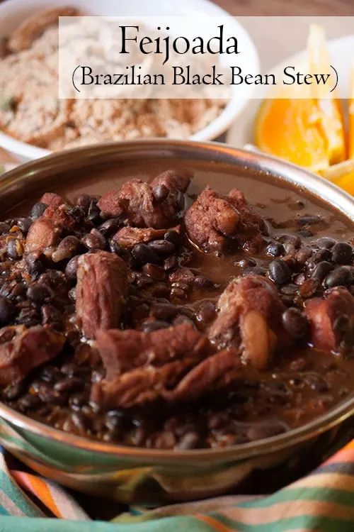

Feijoada

Ingredients
Directions
- 4 ounces diced bacon
- 1 pound boneless pork shoulder, cut into 1 inch chunks
- ½ teaspoon kosher salt
- 1 pound boneless beef short ribs, cut into 1 inch chunks (or carne seca - salted beef - if you can find it)
- ½ teaspoon kosher salt
- 1 pound smoked sausage (linguica sausage if you can find it)
- 1 large onion, diced
- 2 cloves garlic, crushed
- ½ teaspoon kosher salt or ¼ teaspoon table salt
- 1 pound (2 ¼ cups) dried black beans, sorted and rinsed
- ½ teaspoon baking soda
- 1 teaspoon kosher salt
- 5 cups water
- 2 bay leaves
- Salt and freshly ground black pepper
- Minced fresh parsley (optional)